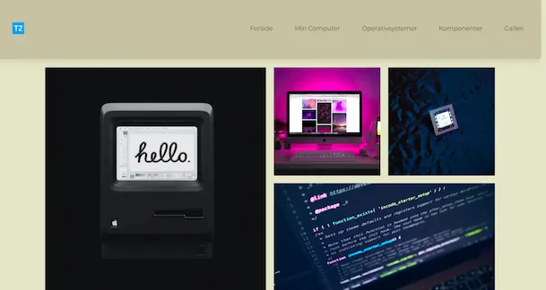
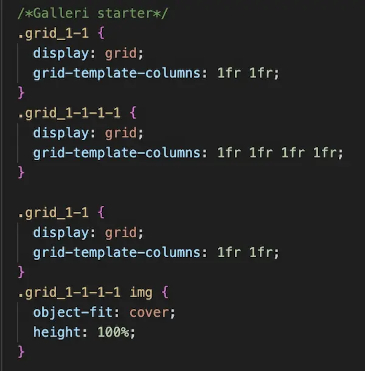
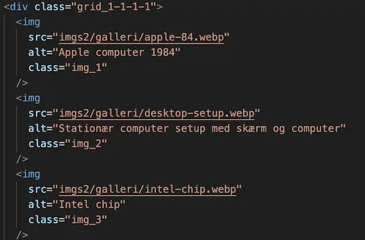

Jeg lært om layoutprincipper og brugen af CSS Grid til at strukturere indhold på en overskuelig og fleksibel måde. Jeg har fået forståelse for, hvordan grid-kolonner kan bruges til at opbygge billedgallerier, der fungerer responsivt på tværs af skærmstørrelser.
Introduktion til Grundlæggende web
I temaet arbejdede jeg med at udvikle et responsivt website, hvor jeg havde fokus på mobile first, semantisk HTML og en overskuelig opbygning af koden. Jeg lærte at bruge CSS Grid, Flexbox og media queries for at sikre, at siden fungerede på forskellige skærmstørrelser. Samtidig arbejdede jeg med visuel opbygning, typografi og billedformater som SVG og WebP, så designet både blev funktionelt og visuelt sammenhængende.
Løsning
Proces
I denne opgave har jeg anvendt CSS Grid til at opbygge et billedgalleri med en 1-1-1-1-struktur, hvor hvert billede placeres i sin egen kolonne. Jeg har koblet HTML og CSS sammen via klasser og sikret, at billederne tilpasser sig layoutet ved hjælp af object-fit: cover og faste grid-kolonner. På den måde bevarer billederne deres visuelle kvalitet, samtidig med at layoutet fremstår ryddeligt og konsekvent.
Læring
Gennem arbejdet med galleriet har jeg lært at træffe bevidste valg omkring layout og billedhåndtering. Jeg har fået erfaring med at vælge CSS Grid frem for andre layoutmetoder, fordi det giver bedre kontrol over struktur og skalerbarhed. Denne viden kan jeg nu bruge i fremtidige projekter, hvor der stilles krav til både visuel sammenhæng, responsivitet og en professionel præsentation af indhold.
